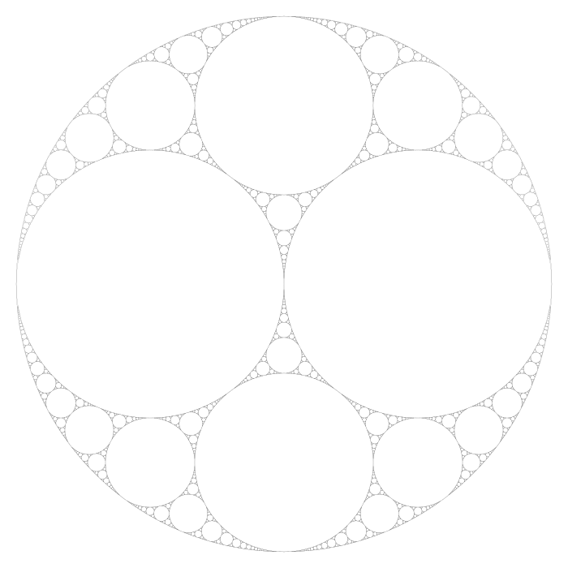
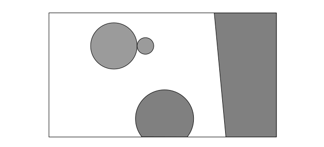
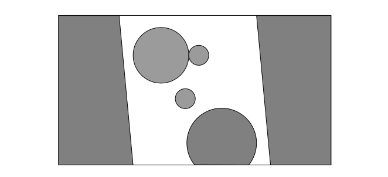
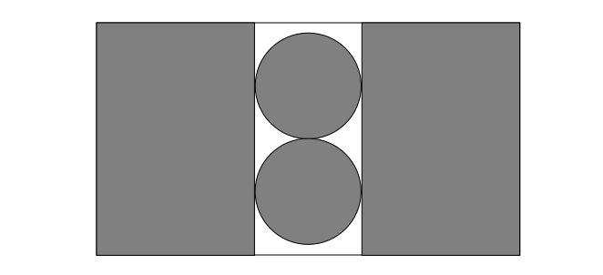
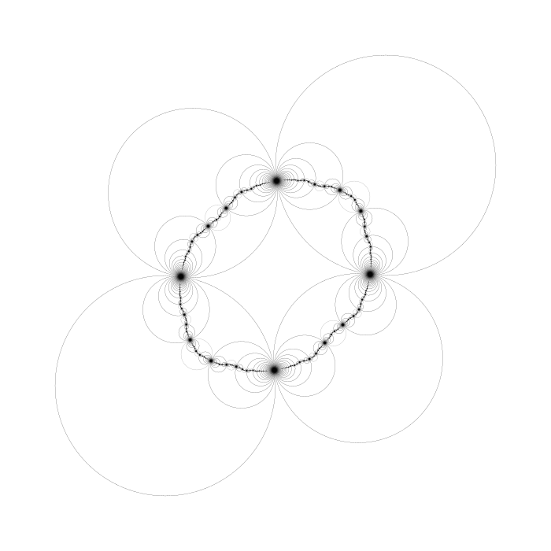

\(
\newcommand{\C}{\mathbb{C}}
\newcommand{\R}{\mathbb{R}}
\newcommand{\N}{\mathbb{N}}
\newcommand{\T}{\mathcal{T}}
\newcommand{\O}{\mathcal{O}}
\newcommand{\H}{\mathcal{H}}
\newcommand{\M}{\mathcal{M}}
\)
The Beauty of Schottky Groups
Katelin P. Beach and Peter E. Francis
Möbius Transformations are a convinent group of maps to study in an introductory course on trasnformational geometry. We will explore a specific kind of subgroup of Möbius transformations and how they are used to make fractal-like images.
We are motivated by understanding the following picture from the perspective of transformational geometry.

An Apollonian gasket
Apollonian gaskets are named after the Greek mathematician Apollonius of Perga. To construct one, first draw three mutually tangent circles and circumscribe a fourth circle tangent to all three. Then, ad infinitum, for each region inside the fourth circle but outside any other, inscribe the largest possible circle. Thier mesmorizing (yet, unconventional) self-similarity is beautiful, and is the key insight into a deeper way of understanding them.
Recall that Möbius transformations $T$ are transformations of the extended complex plane (the Reimann Sphere) $\C^+$ of the form
$$T(z)=\frac{az+b}{cz+d}$$
for complex constants $a, b, c, d\in\C$ satisfying $ab-cd\neq 0$. These transformations form the Möbius group $\M$.
It turns out that the key to understanding pictures like the Apollonian gasket above is to study specific subgroups of $\M$.
Kleinian groups are discrete subgroups of $\M$, and these groups are studied in generality, but we'll focus on a particular kind of Kleinian group called Shottky groups, which are easier to define in the context of an introductory course in transformational geometry.
It will be useful to say that two clines are
non-overlapping if their interiors do not intersect. Because we are working in the extended complex plane, there is a priori no distinction between the
interior and
exterior of a single cline. We are still going to use the words, but it won't be confusing.
If the cline in question is a circle, your intuition won't lead you astray. When we refer to the interior of a line, it will always be in a very specific context: we have a set of at least two possibly-tangent clines (at most two of which are lines), and there will be a side the line that does not contain the interior of another, and this region is the line's interior.

Four non-overlapping clines and their interiors shaded gray
In the situation described above, interiors are only defined when we have at most two lines in our set of clines, and in this case the lines must be parallel (intersecting only at infinity). The figure below shows an example of this case.

Six non-overlapping clines and their interiors shaded gray
This definition of interior comes from the view of a line as a limiting case of a circle: both euclidean circles and lines are circles on the sphere, so in the extended complex plane, we can view lines as circles with infinite radius.
Given two clines $C$ and $C'$, suppose a Möbius transformation $T$ maps $C'$ to $C$, and also takes the exterior of $C'$ to the interior of $C$. Then $T$ is said to pair the cline $C'$ to $C$.
In the definition above, $T$ must also take the interior of $C'$ to the exterior of $C$. Clearly, if $T$ pairs $C'$ to $C$, then $T'=T^{-1}$ pairs $C$ to $C'$.
Given two non-overlapping clines $C$ and $C'$, there is a unique cline $K(C, C')$ over which (by inversion) $C$ and $C'$ are symmetric.
Suppose that $C$ and $C'$ are non-intersecting. Then we can assume that $C=C_{r}(p)$ and $C'=C_{s}(q)$ are circles concentric at the origin, and the cline $K$ that we seek is the circle with radius $\sqrt{rs}$ centered at the origin.
If the clines are intersecting and $C=C_{r}(p)$ and $C'=C_{s}(q)$ are both circles, then we have two cases:
- If $r=s$, then $K$ is the perpendicular bisector of the line containing both $p$ and $q$.
- Otherwise, the cline with center $p+\frac{r(q-p)}{r-s}$ and radius $\sqrt{\frac{rs|q-p|^2}{(r-s)^2}-rs}$ is the one we seek.
We only have left to consider when $C$ is a circle and $C'$ is a tangent line; we can assume $C=S^1$ and $C'=i\cdot\R+1$. In this case, the cline we seek is $K=C_2(-1)$.
The messy algebra is left to the reader.
Remark. For our computational purposes, the constructions in points (1) and (2) will be enough: lines will be approximated with large circles. You can check with some more algebra that $K$ as constructed in (1) and (2) is the cline we seek for the non-intersecting case as well.
Any transformation $T$ that pairs $C'$ to $C$ can be written as the composition of the following maps.
- Invert over $C$.
- Translate and scale $C$ to the unit circle.
- Perform any transformation from the hyperbolic group (disk automorphism).
- Translate and scale the unit circle back to $C$.
- Invert over the cline $K(C,C')$.
Given clines $C$ and $C'$, we'll choose the identity as the transformation from the hyperbolic group, so our canonical circle pairing function will be $T:\C^+\to\C^+$, given by
$$T(z) = \left(I_{K(C, C')} \circ I_{C}\right)(z).$$
The map $T$ is $\M$-similar to $\alpha z$ for some $\alpha > 0$, $\alpha\neq 1$, and the clines $C$ and $C'$ are type II for the two fixed points of $T$.
Constructing Schottky Groups
Schottky groups were first studied by Friedrich Schottky in 1877.
A Schottky group is a Kleinian group generated by transformations $T_1,\dots, T_n$ where there are $2n$ disjoint simple loops, $C_1, C_1',\dots,C_n, C_n'$, bounding a common domain $F$ in the extended complex plane $\C^+$�, where $T_i(C_i') = C_i$, and $T_i(F)\cap F=\emptyset$, $i = 1,\dots,n$.
For our purposes, we (like the authors of
) will suppose that the loops are just non-overlapping clines in $\C^+$.
Given a set of $2n$ non-overlapping clines $\mathcal{C}=\{C_1, C_1',\dots,C_n, C_n'\}$, a Kissing Schottky group is a Kleinian group generated by transformations $T_1,\dots, T_n$ where $T_i$ pairs $C_i'$ to $C_i$ for $i = 1,\dots,n$. Furthermore, let $D_i$ and $D_i'$ be the interiors of $C_i$ and $C_i'$, and define the Fomage of $\mathcal{C}$:
$$F=\C^+-\bigcup_{i=1}^n \overline{D_i \cup D_i'}.$$
Intuitively, $F$ is the extended plane with the clines and their interiors punched out, but in this case, $F$ might not be connected! The figure below shows an example of a Fomage (in white) that is disconnected.

Four non-overlapping clines that determine a disconnected Fomage
However, this Fomage set does correspond to the set $F$ in definition
.
The clines $C_i$ and $C_i'$ might be thought of as
defining clines for the Schottky group, however, they do not completely determine the group. Indeed, recall from our discussion of pairing clines that any hyperbolic transformation can be inserted in between the two inversions.
Let $G$ be the Schottky group generated by $\T$ ($G=\langle \T\rangle$), and observe that for any $T_i,T_i'\in G$, $T_{i}\circ T\in G$ maps $F$ into (but not onto) the interior of $T(D_i)$ and similarly $T_{i}'\circ T\in G$ maps $F$ into (but not onto) the interior of $T(D_i')$. The orbit $\O_F$ of $F$ (called the
ordinary or
regular set of the group) "tiles" the plane, except for the point-set boundary of $\O_F$, which is the limit set of $G$. That is,
$$\partial \O_F = \C^+ - \O_F.$$
Also, due to the contstruction of $\T$, for any $T\in G$, $T(\partial \O_F) = \partial \O_F$.
If $\partial \O_F$ is a loop, then it is called a
quasicircle; if $\partial \O_F$ is a circle then $G$ is called
Fuchsian. A Kleinian group whose limit set is a quasicircle is called a
quasifuchsian group. The limit sets of quasifuchsian groups separate the ordinary set into two disjoint parts.
A Schottky group $\langle T_1, T_2\rangle$ generated with two pairs of circles is quasifuchsian if and only if
- the tangency points must be correctly matched by generators;
- the trace of $T_1\circ T_2\circ T_1'\circ T_2'$ must be $-2$.
The Schottky group generated by $(C_1(1+i), C_1(-1-i))$ and $(C_1(-1+i), C_1(1-i))$ is quasifuchsian. Its limit set is the unit circle, and is shown in red in the figure below. The black circles outline the various images of $F$ in $\O_F$.
 The limit set of a quasifuchsian group is a loop.
The limit set of a quasifuchsian group is a loop.
Below are some more examples of limit sets of quasifucian groups.

A non-circular limit set of a quasifuchsian group.
 Another non-circular limit set of a quasifuchsian group.
Generating Images of Regular and Limit Sets
Another non-circular limit set of a quasifuchsian group.
Generating Images of Regular and Limit Sets
Let's start with the orbit of $F$, which "tiles" the regular set: we'd like to see the outlines of the puzzle pieces. Luckily, this is pretty simple since images of $F$ are bounded by clines. One way to get a picture of $\O_F$ is to rely on the fact a group generated by $n$ transformations with no relations (our circle pairing transformations accomplish this) can be thought of as a free group on $n$ symbols: longer words in the associated free group correspond to smaller images of $F$ in the orbit. Therefore, we can do a depth-first search through the branches of the free group to generate transformations in $G$. We can prune nodes of the search (stop generating) when we reach a pre-determined depth, and/or the circles to be plotted become too small to see.
This is exactly what you can do on the
generator page. Enter a list of circles and specify pruning depths and/or circle sizes.
It is a bit trickier to explicitly plot the limit set. If we plot the tiling $\O_F$ to a significant depth, we see that points in the limit set are where the smallest circles accumulate, but how can we just see the limit set by itself?
If we know something about the limit set, we can cheat a bit. For example, if $\partial \O_F$ is comprised of circles, we can plot the orbit of a specially chosen few of them. That is how we get the image below of the Apollonian gasket (and the last image in the previous section). This Schottky group is generated by the clines $(C_1(-1-i), C_1(1+i))$ and $(\R, C_{\frac{1}{4}}\left(\frac{1}{4}\right))$, whose orbits are seen in black. Its limit set (in red and green) is the orbit of the circles $C_{\frac12}\left(\pm\frac{1}{2}\right)$ and $C_{\frac13}\left(\pm\frac{2}{3}i\right)$, which are shown in green.
 The orbit tiling associated with an Apollonian gasket.
The orbit tiling associated with an Apollonian gasket.
The authors in
provide a list of ways to computationally approximate the limit set of a Schottky group. In addition to the computational use, studying ways to approximate the limit set can facilitate a better understanding. The following notation will be useful: given $T\in G$, write $\ell(T)$ for the number of generating transformations (or their inverses) that $T$ is composed of; in other words, $\ell(T)$ is the length of the associated free group word. Also, let $G_N=\{T\in G\mid \ell(T)=N\}$.
Choose some large $N\in\N$.
- Plot $T(C_i)$ and $T(C_i')$ for all $i\in\{1,\dots,n\}$ and $T\in G_N$.
- Pick any point $p\in F$ and plot $T(p)$ for all $T\in G_N$.
- Plot $T(f^+_i)$ for all $T\in G_N$ and attracting fixed point $f_i^+$ of generating transformation $T_i$.
- Plot all fixed points of transformations $T\in G_N$.
As $N\to\infty$, these approximations give us $\partial\O_F$.
While their content is beyond the scope of this paper, we'll point to two recent publications that feature ongoing research on Schottky groups.
Oliver Jenkinson and Mark Pollicott focus on finding a new algorithm for computing and estimating the Hausdorff dimension of limit sets of quasifuchsian and Schottky groups.
Jean-Phillippe Burelle and Nicolaus Treib study Schottky subgroups with maximal represenations of fundamental groups on bounded surfaces.
- Kleinian group, Encyclopedia of Mathematics, Springer. http://encyclopediaofmath.org/index.php?title=Kleinian_group&oldid=47504
- David Mumford, Caroline Series, and David Write. Indra's Pearls: The Vision of Felix Klein, 2002.
- Michael Kapovich. Kleinian Groups in Higher Dimensions. Progress in Mathematics, Vol. 256, 485-562, 2007. https://www.math.ucdavis.edu/~kapovich/EPR/klein.pdf
- Rubén Hidalgo and Bernard Maskit. On Neoclassical Schotty Groups. Transations of the American Mathematical Society, Volume 358, Number 11, November 2006. https://www.ams.org/journals/tran/2006-358-11/S0002-9947-05-03792-X/S0002-9947-05-03792-X.pdf
- Oliver Jenkinson and Mark Pollicott. Calculating Hausdorff Dimension of Julia Sets and Kleinian Limit Sets. The Johns Hopkins University Press, June 2002. https://muse.jhu.edu/article/977/pdf
- Jean-Phillippe Burelle and Nicolaus Treib. Schottky groups and maximal repesentations. Geometriae Dedicata, Volume 195, Number 1, 2018. https://doi.org/10.1007/s10711-017-0285-2